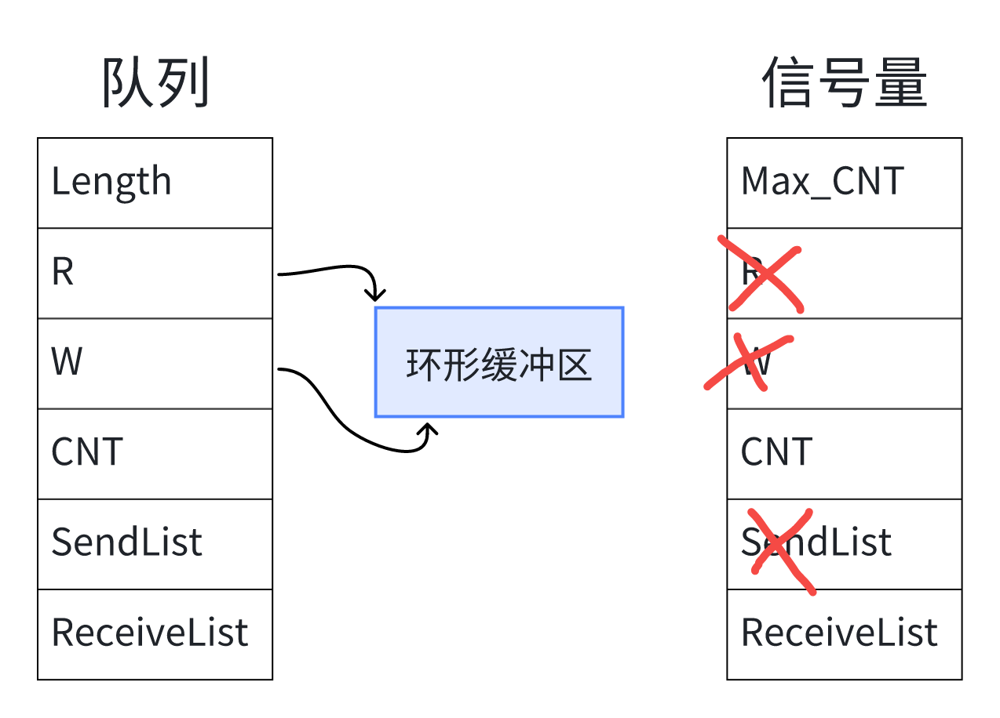

信号量与互斥量
6.1 信号量的本质¶

信号量本质上时特殊的队列，下面时对应的差异：
队列
- 读队列：① 拷贝数据。 ② CNT-- 。 ③唤醒等待接收数据者。
- 写队列：① 拷贝数据。 ② CNT++ 。 ③唤醒等待接收数据者。
- 读队列时，队列为空 可以阻塞 。
- 写队列时，队列已满 可以阻塞 。
信号量
- 给出资源(Give)：① CNT++。 ② 唤醒等待者。
- 获得资源(Take)：① CNT--。（没有唤醒操作）
- Give：计数值已经达到最大时返回失败， 不阻塞 。
- Take：没有资源获取时， 可以阻塞 。
6.2 信号量函数¶
6.2.1 创建信号量¶
两种信号量差异：
| 二进制信号量 | 计数型信号量 |
|---|---|
| 只有 0 或 1 两个值，被创建时初始值为 0 | 计数值自定义，且被创建时初始值可以设定 |
| 其他操作是一样的 | 其他操作是一样的 |
计数型信号量
C
/* Creates a new counting semaphore instance, and returns a handle by which the
* new counting semaphore can be referenced.
*/
SemaphoreHandle_t xSemaphoreCreateCounting( UBaseType_t uxMaxCount, UBaseType_t uxInitialCount )
二进制信号量
C
/* Creates a new binary semaphore instance, and returns a handle by which the
* new semaphore can be referenced.
*/
SemaphoreHandle_t xSemaphoreCreateBinary( void )
6.2.2 获取/释放信号量¶
获取信号量
C
/* to obtain a semaphore. */
xSemaphoreTake(
SemaphoreHandle_t xSemaphore,
TickType_t xBlockTime
);
/* to obtain a semaphore from an ISR */
xSemaphoreTakeFromISR(
SemaphoreHandle_t xSemaphore,
BaseType_t *pxHigherPriorityTaskWoken
);
释放信号量
C
/* to release a semaphore. */
xSemaphoreGive( SemaphoreHandle_t xSemaphore );
/* to release a semaphore from an ISR */
xSemaphoreGiveFromISR(
SemaphoreHandle_t xSemaphore,
BaseType_t *pxHigherPriorityTaskWoken
);
6.2.3 删除信号量¶
6.3 使用信号量¶
6.3.1 创建、获取与释放示例¶
在队列最后一个示例的基础上：
定义信号量句柄
C
/* Private variables ---------------------------------------------------------*/
/* USER CODE BEGIN Variables */
static SemaphoreHandle_t g_xSemaphoreHandle;
/* USER CODE END Variables */
创建信号量，最大计数为 5 ，可用量为 2 ；并将任务注释一个
C
void MX_FREERTOS_Init(void) {
/* USER CODE BEGIN Init */
g_xSemaphoreHandle = xSemaphoreCreateCounting(4, 2);
/* USER CODE END Init */
...
/* USER CODE BEGIN RTOS_THREADS */
/* add threads, ... */
xTaskCreate(OLED_PrintTask, "Task1", 128, &g_car[0], osPriorityNormal, NULL);
xTaskCreate(OLED_PrintTask, "Task2", 128, &g_car[1], osPriorityNormal, NULL);
xTaskCreate(OLED_PrintTask, "Task3", 128, &g_car[2], osPriorityNormal, NULL);
// xTaskCreate(OLED_PrintTask, "Task4", 128, &g_car[3], osPriorityNormal, NULL);
}
修改任务函数，取消队列，添加信号量获取与释放
C
void OLED_PrintTask(void *params) {
Car *car = params;
ShowCar(car);
/* 获取信号量 */
xSemaphoreTake(g_xSemaphoreHandle, portMAX_DELAY);
while (1) {
/* 读队 */
HideCar(car);
car->x += 1;
if (car->x > 128 ) {car->x = 120;}
ShowCar(car);
vTaskDelay(100);
if (car->x == 120) {
/* 释放信号量 */
xSemaphoreGive(g_xSemaphoreHandle);
vTaskDelete(NULL);
}
}
}
实验现象，上两行字符先移动，到达终点释放信号量，第三行字符开始移动。
6.3.2 信号量分配优先级¶
- 优先级高的，后到可以排前面。
- 优先级一样高的，按创建任务的先后分配信号量，后创建的等待信号量释放。
6.3.3 优先级反转¶
什么时优先级反转，就是低优先级的任务卡住了高优先级任务，使其无法运行，如下面的例子：
① 低优先级任务：占用唯一一个信号量实验。
② 中优先级任务：没有阻塞态，一直处于可运行状态。（一旦此任务运行，则低优先级任务任务没有运行机会）
③ 高优先级任务：需要信号量，得不到信号量就阻塞。
复现上诉案例：
使用二进制信号量，并修改任务优先级
C
void MX_FREERTOS_Init(void) {
/* USER CODE BEGIN Init */
g_xSemaphoreHandle = xSemaphoreCreateBinary();
// 释放一个信号量
xSemaphoreGive(g_xSemaphoreHandle);
/* USER CODE END Init */
...
/* USER CODE BEGIN RTOS_THREADS */
/* add threads, ... */
xTaskCreate(OLED_PrintTask1, "Task1", 128, &g_car[0], osPriorityNormal, NULL);
xTaskCreate(OLED_PrintTask2, "Task2", 128, &g_car[1], osPriorityNormal+1, NULL);
xTaskCreate(OLED_PrintTask3, "Task3", 128, &g_car[2], osPriorityNormal+2, NULL);
/* USER CODE END RTOS_THREADS */
...
}
修改任务函数
C
void OLED_PrintTask1(void *params) {
Car *car = params;
ShowCar(car);
xSemaphoreTake(g_xSemaphoreHandle, portMAX_DELAY);
while (1) {
/* 读队 */
HideCar(car);
car->x += 1;
if (car->x > 128 ) {car->x = 120;}
ShowCar(car);
vTaskDelay(100);
if (car->x == 120) {
xSemaphoreGive(g_xSemaphoreHandle);
vTaskDelete(NULL);
}
}
}
void OLED_PrintTask2(void *params) {
Car *car = params;
ShowCar(car);
vTaskDelay(1000);
// xSemaphoreTake(g_xSemaphoreHandle, portMAX_DELAY);
while (1) {
/* 读队 */
HideCar(car);
car->x += 1;
if (car->x > 128 ) {car->x = 120;}
ShowCar(car);
// vTaskDelay(100);
HAL_Delay(100);
if (car->x == 120) {
// xSemaphoreGive(g_xSemaphoreHandle);
vTaskDelete(NULL);
}
}
}
void OLED_PrintTask3(void *params) {
Car *car = params;
ShowCar(car);
vTaskDelay(2000);
xSemaphoreTake(g_xSemaphoreHandle, portMAX_DELAY);
while (1) {
/* 读队 */
HideCar(car);
car->x += 1;
if (car->x > 128 ) {car->x = 120;}
ShowCar(car);
vTaskDelay(100);
if (car->x == 120) {
xSemaphoreGive(g_xSemaphoreHandle);
vTaskDelete(NULL);
}
}
}
6.4 互斥量¶
6.4.1 使用场景¶
- 解决优先级反转问题，临时提拔低优先级任务的优先级和高优先级一样。
- 保护临界资源。
6.4.2 互斥量函数¶
6.4.3 解决优先级反转¶
将二进制信号量的创建改成互斥量即可：
C
void MX_FREERTOS_Init(void) {
/* USER CODE BEGIN Init */
g_xSemaphoreHandle = xSemaphoreCreateMutex();
xSemaphoreGive(g_xSemaphoreHandle);
}
6.4.4 保护临界资源¶
待补充